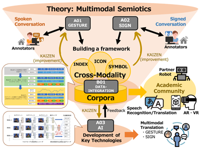

Self-initiated Repair (SIR)
We analyze the Self-initiated Repair sequence in social interactions. This involves how signers correct or adjust their own signing during conversation.

Interactional dynamics in sign language.
The repair segment often includes an adjacency pair or side sequence, such as a question-answer sequence where signers ask interlocutors about unshared vocabulary using an integrated linguistic repertoire: signs, gesturing, fingerspelling, and mouthing.